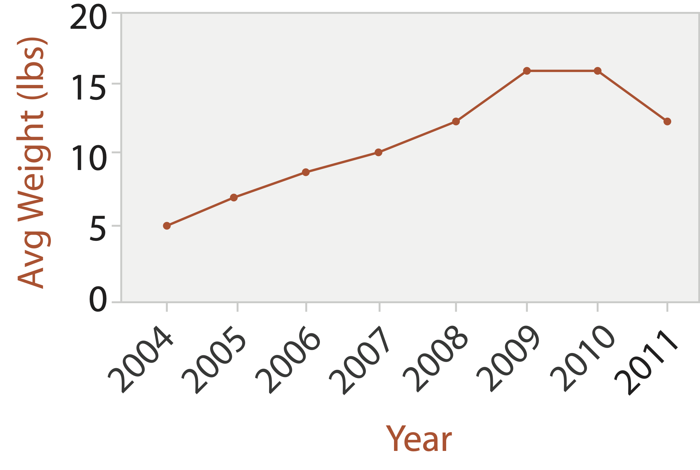
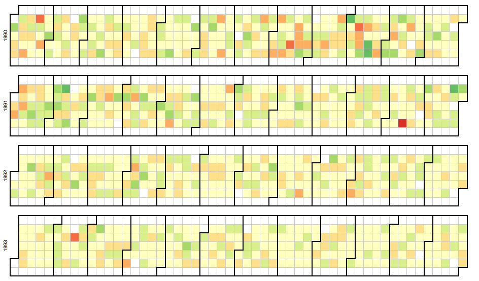

Visualizing Temporal Data
MIDS W209: Information Visualization
John Alexis Guerra Gómez | john.guerra[at]gmail.com | @duto_guerra
https://johnguerra.co/lectures/MIDS_W209_Information_Visualization/07_Time/
https://johnguerra.co/lectures/MIDS_W209_Information_Visualization/07_Time/

Partially based on slides from Tamara Munzner
What we are going to learn
Visualizing Time
Temporal Datasets
- One attrib+ has a timestamp (at any level)
- Granularity ("Year/Month/Day" vs "Year/Month/Day Hour")
- Truncate
- Datepart
- Sometimes is Cyclic
- Seasonality
Idioms
Idiom: line chart / dot plot
- one key, one value
- data: 2 quant attribs
- mark: points & line connection marks between them
- channels
- ul.small
- aligned lengths to express quant value
- separated and ordered by key attrib into horizontal regions
- task: find trend
- connection marks emphasize ordering of items along key axis by explicitly showing relationship between one item and the next
- scalability: hundreds of key levels, hundreds of value levels

Idiom: streamgraph
- generalized stacked graph
- emphasizing horizontal continuity
- vs vertical items
- data
- 1 categ key attrib (artist)
- 1 ordered key attrib (time)
- 1 quant value attrib (counts)
- derived data
- mark: layers
- height encodes counts
- 1 quant attrib (layer ordering)
- scalability:
- hundreds of time keys
- dozens to hundreds of artist keys
- more than stacked bars, since most layers don’t extend across whole chart
Streamgraph RIO2016

Choosing bar vs line charts
- depends on type of key attrib
- bar charts if categorical
- line charts if ordered
- do not use line charts for categorical key attribs
- violates expressiveness principle
- implication of trend so strong that it overrides semantics!
- “The more male a person is, the taller he/she is”
Multi-series Line chart
http://blockbuilder.org/mbostock/3884955by mbostockIdiom: dual-axis line charts
- controversial
- acceptable if commensurate
- beware, very easy to mislead!
Idiom: connected scatterplots
- scatterplot with line connection marks
- popular in journalism
- horiz + vert axes: value attribs
- line connection marks: temporal order
- empirical study
- engaging, but correlation unclear
Idiom: connected scatterplots 2
- alternative to dual-axis charts
- horiz: time
- vert: two value attribs
Choosing line chart aspect ratios
- 1: banking to 45 (1980s)
- Cleveland perceptual argument: most accurate angle judgement at 45
Choosing line chart aspect ratios
- 2: multi scale banking to 45 (2006)
- frequency domain analysis to find ratios
- FFT the data, convolve with Gaussian to smooth
- find interesting spikes/ranges in power spectrum
- cull nearby regions if similar, ensure overview
- create trend curves (red) for each aspect ratio
Choosing line chart aspect ratios
- 3: arc length based aspect ratio (2011)
- minimize the arc length of curve while keeping the area of the plot constant
- parametrization and scale invariant
- symmetry preserving
- robust & fast to compute
- meta-points from this progression
- young field; prescriptive advice changes rapidly
- reasonable defaults required deep dive into perception meets math
Idiom: Indexed line charts
- data: 2 quant attires
- 1 key + 1 value
- derived data: new quant value attrib
- index
- plot instead of original value
- task: show change over time
- principle: normalized, not absolute
- scalability same as standard line chart
Idiom: Gantt charts
- one key, two (related) values
- data: 1 categ attrib, 2 quant attribs
- mark: line
- length: duration
- channels: horiz position: start time (+end from duration)
- task: emphasize temporal overlaps, start/end dependencies between items
- scalability
- dozens of key levels
- hundreds of value levels
Idiom: Slopegraphs
- two values
- data
- 2 quant value attribs
- (1 derived attrib: change magnitude)
- mark: point + line
- line connecting mark between pts
- channels
- 2 vertical pos: express attrib value
- (linewidth/size, color)
- task emphasize changes in rank/value
- scalability hundreds of value levels
Breaking conventions
- presentation vs exploration
- engaging/evocative
- inverted y axis
- blood drips down on Poe
idiom: Horizon charts
- Data: Table, many timelines
- Tasks: Compare trends and similarities (with many), locate outliers
- Visual Representation: Line, vertical position, color luminosity (quant divergent)
- Considerations: Uses much less space

Horizon charts
http://blockbuilder.org/john-guerra/7770baa3383ab777f8ac211deeb66fbcby mbostockCubism
http://square.github.io/cubism/Joyplots
https://blockbuilder.org/john-guerra/2bb5a08bd6f17a5cb4efd6ad6d98973cJoyplot vega-lite
https://observablehq.com/@vega/psr-b1919-21-with-vega-liteidiom: Calendar view
- Data: Table (years), one timeline
- Tasks: Compare trends (by days of the week, month, year), locate outliers
- Visual Representation: Shape, vertical/horizontal position, color hue
- Considerations: Natural view for humans, focus on common time aggregations

Calendar View
http://blockbuilder.org/mbostock/4063318by mbostockidiom: Radial timelines
- Data: Table (years), one timeline
- Tasks: Compare trends (by days of the week, month, year), locate outliers
- Visual Representation: Line, Radial position, color hue (rainbow :( )
- Considerations: Appeals to cyclic nature of time

Gantt charts
- Data: Two time attribs (start end)
- Tasks: Summarize duration (features), compare events, identify intersections/dependencies
- Visual Representation: Line, express for time, separate/order/aligned for tasks, color hues
D3 Radial
Nightingale Chart
"Diagram of the causes of mortality in the army in the East" (1858)
Stacked Area chart
http://blockbuilder.org/mbostock/3020685by mbostockStacked Radial Area
http://blockbuilder.org/mbostock/3048740by mbostockStacked Radial Area
https://observablehq.com/@d3/radial-area-chartHCIL work on Temporal events
Time searcher
http://www.cs.umd.edu/hcil/timesearcher/Lifelines
http://www.cs.umd.edu/hcil/lifelines/Lifelines
 http://www.cs.umd.edu/hcil/lifelines/
http://www.cs.umd.edu/hcil/lifelines/
Lifelines 2
 http://www.cs.umd.edu/hcil/lifelines2/
http://www.cs.umd.edu/hcil/lifelines2/
Lifelines 2 demo
Lifelines 2 video linkSimilian
 http://www.cs.umd.edu/hcil/similan
http://www.cs.umd.edu/hcil/similan
Similian demo
Similian video linkLifeFlow
 http://www.cs.umd.edu/hcil/lifeflow/
http://www.cs.umd.edu/hcil/lifeflow/
LifeFlow howto
LifeFlow demo
EventFlow
 http://hcil.umd.edu/eventflow/
http://hcil.umd.edu/eventflow/